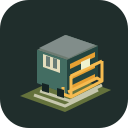

第一站 · 上手 30 秒
点加速，让小火车出发
正在准备列车与站台…

KAOPU / TRAIN DRIVER
火车老司机 · 平鋪旅程
晨霧裡鳴笛，載著菜擔與乘客北上。
尖沙咀 Kowloon 06:20 → 羅湖 Lo Wu 07:22
巡航壓縮，全線約10分鐘；進出站自己操作。
可隨時收車，玩幾站也算一趟。
停早可以慢挪，漏站可以补救
随时暂停，回来继续这一趟
本趟完成
这一趟，开得不错
0
接上乘客0送到站台0最高连送0停车准确0%误站 / 补救0 / 0乘客满意0
火车老司机 / 驾驶设置
设置
调整视角与画面，回来继续这一趟。
鐵路聲音
點出發後開啟聲音。人群底聲為現代普通話環境參考，預設關閉。实录素材與來源見聲音資料。
1號早班時刻
画面清晰度
清晰优先细节，流畅优先帧率，自动平衡两者。
布局与视角
显示与帮助
加速：W / ↑ 减速：S / ↓
按住制动：空格 到站动作：E
暂停或继续：P
提前刹车，停稳后开门。红横臂水平表示停车，下倾表示可行车；信号只显示状态。
仪表与站牌借鉴英国西部地区蒸汽铁路，車速同時顯示 km/h 與 mph；站牌里程保留原表 Mi / Km。遊戲時鐘在巡航加快，近站放慢，慢行或停車會遲到。
本趟旅程
接上 0送达 0连送 0满意 85
提前刹车，停稳后再开门
错过了也别慌，还能挽回
完成 0 站误站 0